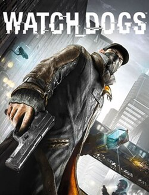
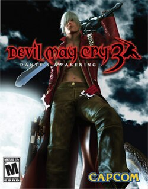

4.5/5
Genre: Action-adventure
Developmend: NautyDogs
Uncharted 4: A Thief's End is an action-adventure game played from a third-person perspective. Players traverse several environments via platforming, moving through locations including towns, buildings, and wilderness to advance through the story.
They use firearms, melee combat, and stealth to combat hostile enemies.
For most of the game, players control Nathan Drake—a treasure hunter who is physically adept and can jump, sprint, climb, swim, scale narrow ledges and walls, swing with a rope, use a grappling hook and perform other acrobatic actions.[2]
Vehicles are driven during some gameplay segments.[3]
3.8/5
Genre: Action, Fighting, role-playing
Developmend: Dimp
The game is very similar to its predecessor in terms of gameplay. It is primarily set in 3D battle arenas modeled after notable locations in the Dragon Ball universe, with the central hub being an expanded version of Toki-Toki City, known as Conton City.
As reported by the creators of the game, Conton City is seven times larger than Toki-Toki City.[9] Players are able to freely traverse the hub world, and in some areas are capable of flying, once they have unlocked the ability to fly.
Players are also able to travel to other locations such as the Namekian Village and Frieza's ship. As in the previous games, some skills have to be learned through masters and other non-player characters, some of whom are found exclusively in those additional areas.
Xenoverse 2 is the fourth Dragon Ball video game to feature character customization, and allows players to choose from five races: Humans, Saiyans, Majins, Namekians and Frieza's race, each with different strengths and weaknesses.

4.0/5
Genre: Action-adventure
Developmend: Ubisoft
Watch Dogs is an action-adventure game, played from a third-person view. The player controls hacker Aiden Pearce, who uses his smartphone to control trains and traffic lights, infiltrate security systems, jam cellphones, access pedestrians' private information, and empty their bank accounts. System hacking involves the solving of puzzles.
The game is set in a fictionalized version of Chicago ("Windy City"),[4] an open world environment which permits free-roaming.[7] It has a day-night cycle and dynamic weather system, which changes the behavior of non-player characters (NPCs).
For melee combat, Aiden has an extensible truncheon; other combat uses handguns, shotguns, sniper rifles, machine guns, and grenade launchers.
There is a slow motion option for gunplay,[12] and the player can use proximity IEDs, grenades, and electronic lures.[6][9] Lethal and non-lethal mission approaches can be enacted.[13]

4.5/5
Genre:Action-adventure, hack and slash
Developmend: Capcom
The gameplay in Devil May Cry 3 consists of levels, missions, in which players battle enemies, carry out platforming tasks and solve puzzles to progress through the story. The player's performance in each mission is graded from D through C, B and A, with top marks of S and SS.
Grades are based on time taken to complete a mission, the number of red orbs (currency obtained from defeated enemies) gathered, "stylish" combat, item usage and damage received.
The games tracks stylish combat by an on-screen gauge, which is the performance of a series of attacks ("combos") while avoiding damage. The longer a player attacks without repetition and evades damage, the higher the score.
The gauge registers "Dope" after a few attacks, progressing through "Crazy", "Blast", "Alright", "Sweet", "SShowtime" to peak at "SSStylish". If Dante receives damage, the style rating falls; if the gauge is "Crazy" or below, it will reset.
Devil May Cry 3's battle system allows a player to link attacks, with each weapon having a set number of attacks.